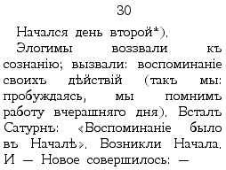
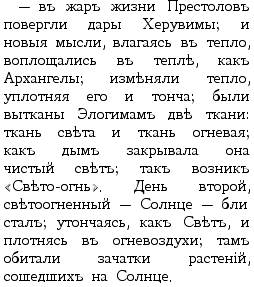
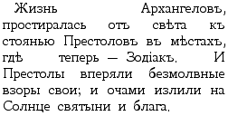
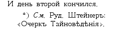

Glossolalia (Section 30)

The second day began.*
The Elohim called to consciousness; they called forth; memories of their actions (we do the same: as we awake, we remember the labor of yester day). Saturn arose: "In the Beginning there was Memory." The Primal Beginnings rose. And -- the New was consummated:--

-- the Cherubim turned their gifts into the heat of life of the Thrones; and new thoughts, inplanted into the warmth, came to fruition in the warmth as Archangels; they altered the warmth, condensing it and refining it; two woven fabrics were woven for the Elohim: the fabric of light and the fiery fabric; like smoke this fabric shut out the pure light; thus arose "Light-fire." The second day, a light-fiery one -- the Sun -- shone; being refined, as the Light, and being condensed into fire-airs; there lived the germinal beginnings of the plants which had descended to the Sun.

The life of the Archangels, extended from the light to the stand of the Thrones in those places, where now there is -- the Zodiac. And the Thrones fastened their wordless gaze; and through their eyes they poured out onto the Sun the sacred and a blessing.

And the second day ended.